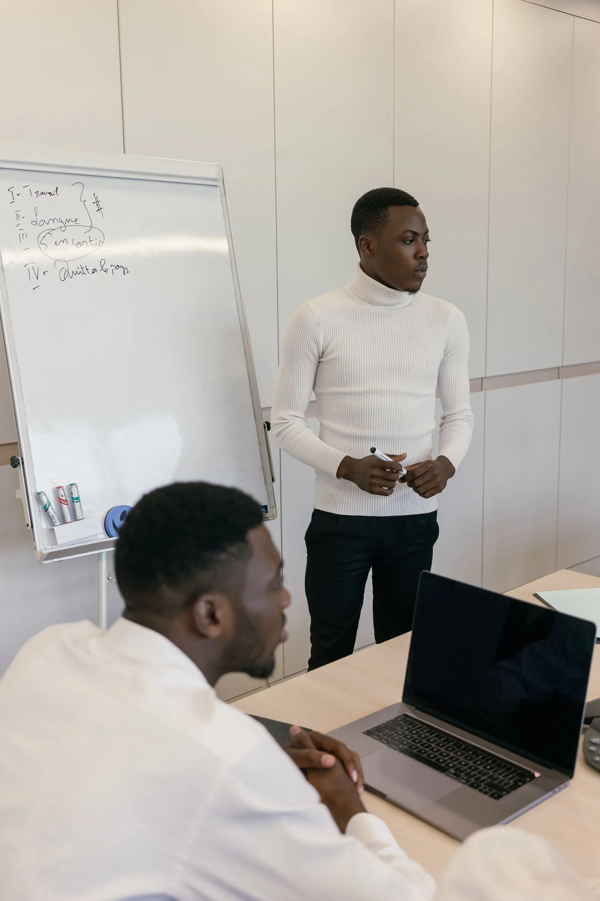
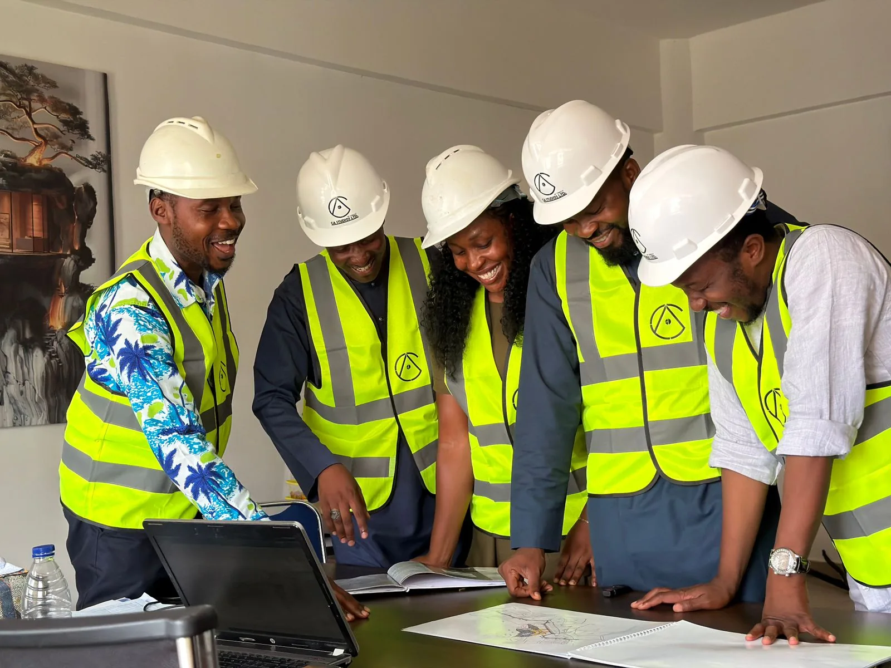

Service 01
Ghana Market Entry Support
A disciplined first step for organisations considering Ghana.
Explore service ↗The Private Office provides defined assignments for organisations that need local understanding, credible coordination and consistent follow-through. Services may be commissioned separately or combined within a single engagement.
Submit a Service EnquiryEach service has a clear purpose and can stand alone. Where the assignment crosses several needs, we combine only the workstreams that add practical value.
A disciplined first step for organisations considering Ghana.
Explore service ↗
A reliable local point of coordination for approved commercial activity.
Explore service ↗Purposeful Ghana programmes designed around business objectives, not ceremonial activity.
Explore service ↗Structured connections between credible organisations with a defined commercial purpose.
Explore service ↗Careful preparation and coordination for legitimate institutional cooperation.
Explore service ↗Concise evidence for executives preparing to enter, visit or decide.
Explore service ↗Coordinated local support for serious business, investment and relocation visits.
Explore service ↗
Early-stage coordination for credible projects and commercial opportunities.
Explore service ↗We do not begin with an introduction. We begin with the decision the client needs to make and the evidence or relationship required to support it.
Share the organisation, objective, sector, timing and decision that requires support.
We assess fit, identify information gaps and determine the professional support required.
The agreed outputs, responsibilities, timetable, boundaries and fees are set out in writing.
Approved research, meetings and follow-through are delivered through one accountable programme.
All assignments are subject to review, written scope, appropriate due diligence and agreed fees. Regulated advice and operational services are provided by the responsible qualified professional or operating company.
Clients know who is responsible, what will be delivered, which decisions remain theirs and when specialist advisers must be engaged.
How the Office worksTell us what your organisation is seeking to achieve in Ghana. We will review the objective, scope and proposed timing before suggesting a responsible next step.